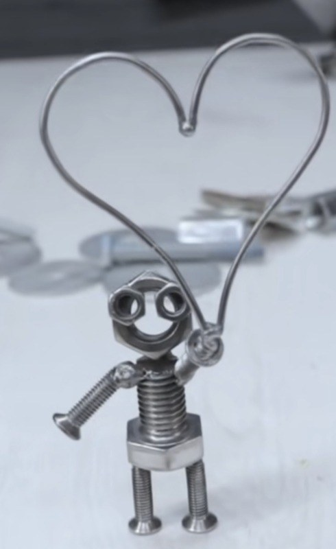
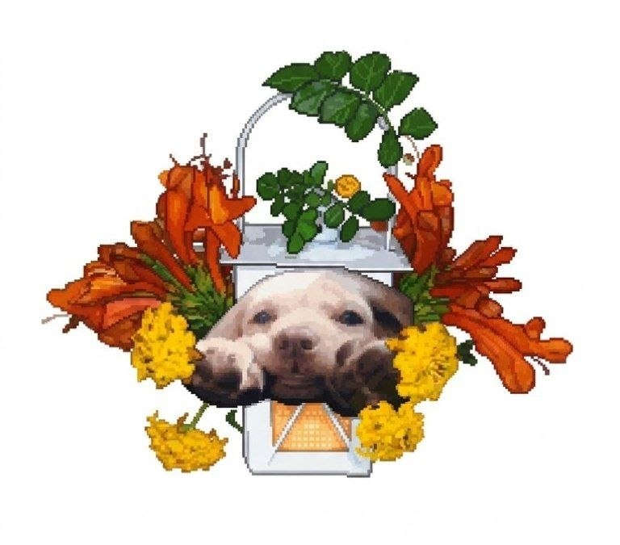
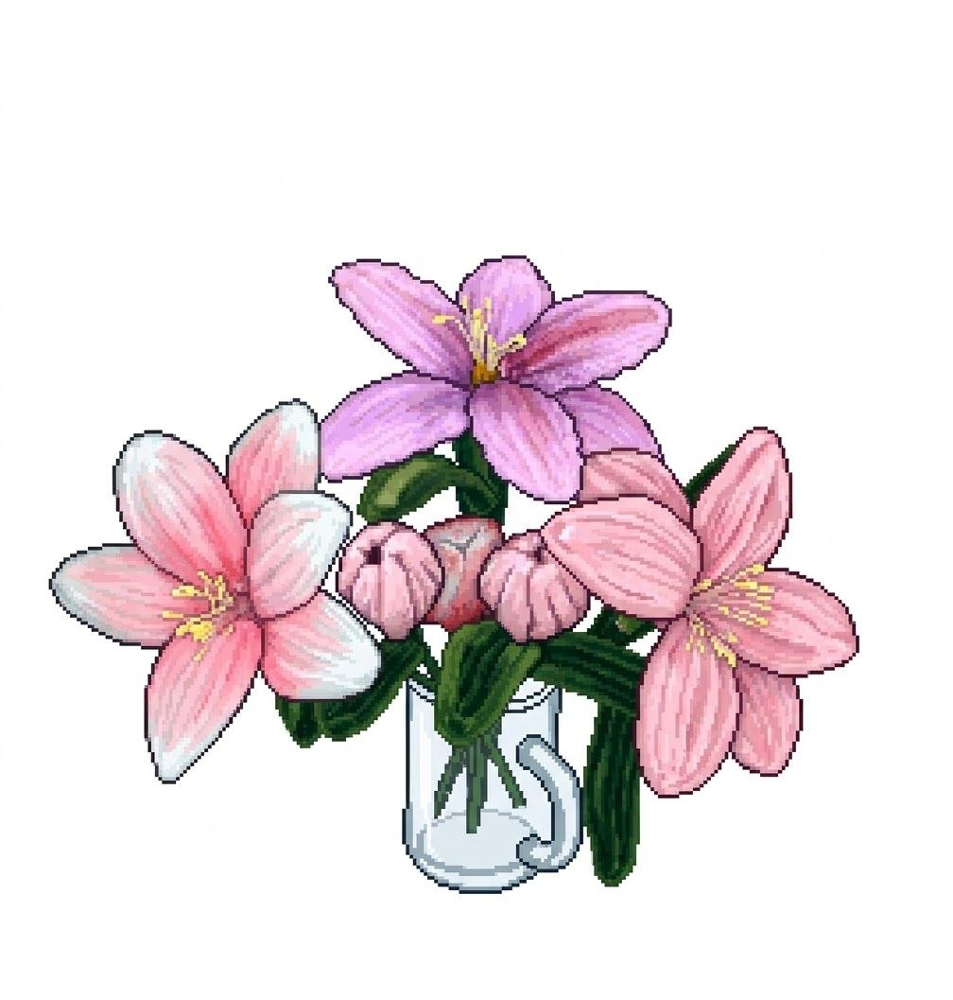

Premi [Spazio], [E] o tocca ✕ per rimettere la fotografia sul letto ▼
✦ OGGETTO DEL RICORDO ✦

«Un piccolo omino di ferro assemblato con bulloni e viti, che tiene in mano un palloncino a forma di cuore.»
✦ OGGETTO DEL RICORDO ✦

«Una lanterna rustica in legno intagliato che custodisce una luce calda e viva, affidata alle acque del lago per farsi trovare.»
✦ DONO DEL RICORDO ✦

«Un fresco mazzo di gigli rosa legati con un nastro di corda. I petali sono vellutati e rilasciano un profumo dolce e familiare, i fiori preferiti di Anna.»
🔊 Clicca per attivare l'audio del video ❤️
Andrea & Anna ❤️
Anna
...
Premi [E], [Spazio] o tocca lo schermo per proseguire ▼
OMBRE DEL RICORDO
Dedicato ad Anna — Fine della Prima Parte
Anna si è lasciata alle spalle la sicurezza della propria casa.
Oltre il cancello del cortile, il confine tra la realtà e il ricordo sbiadito comincia a dissolversi.
Cosa la attende oltre la nebbia?